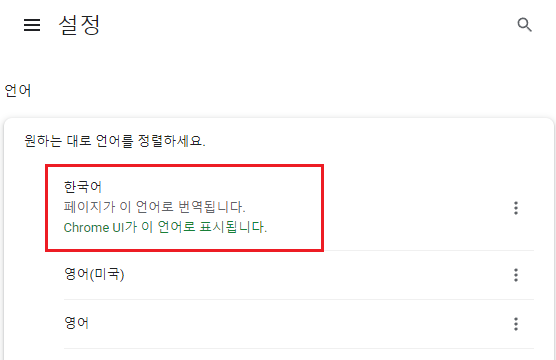
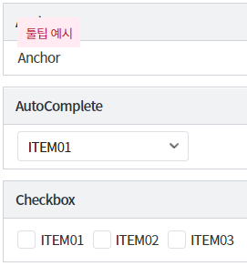
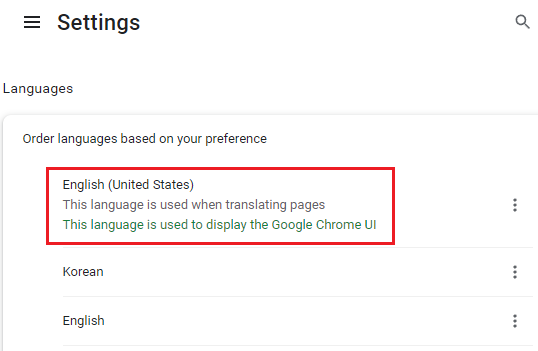
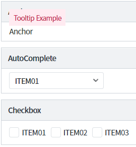
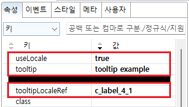
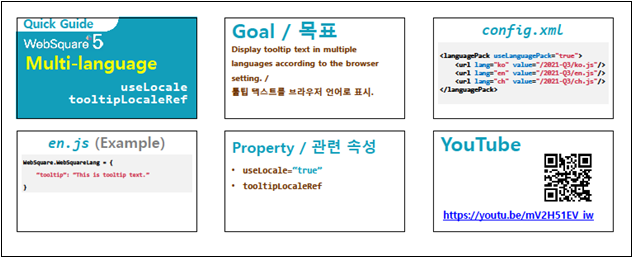

클라이언트 다국어 설정에 관한 속성 중 하나인 tooltipLocaleRef 속성 사용 예시입니다.
tooltipLocaleRef 속성은 툴팁을 소스에 하드 코딩해야 하는 경우에 사용됩니다.
useItemLocale 속성이 있는 대표적인 컴포넌트는 Anchor, AutoComplete, CheckBox, Radio, SelectBox, TextBox, Trigger 입니다.클라이언트 다국어는 브라우저의 언어 설정에 따라 동작합니다.
브라우저의 언어 설정을 변경한 경우 브라우저를 전체 새로고침 해야 변경된 언어가 반영됩니다.
클라이언트 다국어 설정에 대한 자세한 내용은 아래의 참고 문서의 온라인 링크를 확인하시거나,
웹스퀘어5 심화 가이드 문서의 다국어 설정 가이드를 참고하시기 바랍니다.
Anchor, AutoComplete, Checkbox, CheckComboBox, Radio, SelectBox, TextBox, Trigger 컴포넌트에 tooltipLocaleRef 속성을 사용하여 브라우저 언어에 따라 툴팁을 한국어, 영어로 출력하기
이 예제는 컴포넌트에 마우스를 올리면 툴팁이 노출됩니다.
툴팁은 브라우저의 언어 설정에 따라 출력되는 문자열이 다릅니다.
1. 브라우저의 언어 설정을 한국어로 설정합니다.
아래의 설정은 Chrome 브라우저의 예시입니다.
[Chrome 브라우저의 언어 설정 예시]

브라우저 설정을 변경한 경우에는 브라우저를 전체 새로고침을 해야 적용됩니다.
2. 출력 결과 확인하기
[한국어로 설정된 결과 예시]

1. 브라우저의 언어 설정을 한국어로 설정합니다.
아래의 설정은 Chrome 브라우저의 예시입니다.
[Chrome 브라우저의 언어 설정 예시]

브라우저 설정을 변경한 경우에는 브라우저를 전체 새로고침을 해야 적용됩니다.
2. 출력 결과 확인하기
[영어로 설정된 결과 예시]

언어팩 JS 파일에 화면에서 사용할 키(Key)와 값(Value)을 정의합니다. 예제 프로젝트의 경우 한국어, 영어가 설정되어있으며 파일 위치는 아래와 같습니다.
한국어 : [예제 프로젝트]/WebContent/lang/ko.js
영어 : [예제 프로젝트]/WebContent/lang/en.js
//한국어 - ko.js 예시 //화면에서 사용할 문자열을 등록합니다. //c_label_4_1 WebSquare.WebSquareLang = { "c_label_4_1": " 툴팁 예시" };
//영어 - en.js 예시 //화면에서 사용할 문자열을 등록합니다. //c_label_4_1 WebSquare.WebSquareLang = { "c_label_4_1": "Tooltip Example" };
참고 문서 를 통해 동작 방식과 설정 등, 상세 내용을 확인할 수 있습니다.
[필수 고정] useLocale="true" //[default : false, true] 클라이언트 다국어 설정의 사용 여부를 정의합니다.
[필수] tooltip="tooltip example" //다국어 KEY가 없는 경우 표현할 툴팁 문자열
[필수] tooltipLocaleRef="c_label_4_1" //다국어 KEY
그림 1.웹스퀘어5 SP5 스튜디오의 Property View(속성창) 예시

<!-- anchor의 소스 본문 예시 --> <w2:anchor tooltipLocaleRef="c_label_4_1" useLocale="true" tooltip="tooltip example" outerDiv="false"> <xf:label><![CDATA[Anchor]]></xf:label> </w2:anchor>
tooltipLocaleRef
tooltip
useLocale
[웹스퀘어5 심화 가이드] 다국어 설정 가이드
링크 : https://docs1.inswave.com/sp5_user_guide/73c59bba42ccbcd4
[웹스퀘어5 심화 가이드] 툴팁 다국어 (tooltipLocaleRef)
링크 : https://docs1.inswave.com/sp5_user_guide/73c59bba42ccbcd4#26d5d4ab2742c223
툴팁 다국어 (tooltipLocaleRef)
링크 : https://youtu.be/mV2H51EV_iw
